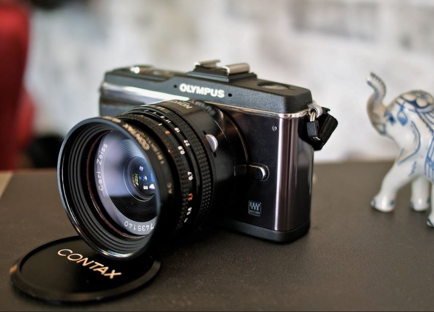

在尋找有靈魂的鏡頭嗎?
想體驗超乎想像的匠人設計?
想觀看那些曾經耀眼的鏡頭嗎?
老鏡漫旅>Product
日式銀鹽
阿富汗少女鏡
Nikon nikkor 105mm F2.5
因為Steven Mccury用此鏡拍出著名的阿富汗少女照片，而被冠上“阿富汗少女鏡”這個稱號而聞名於世。 105mm F2.5 的鏡片是光學設計的極致表現，數十年來都未曾再修改過，是最被推崇的人像銘鏡。 全金屬用料超砸實的，連對焦環都是金屬，鏡頭十分有份量，質感極佳！
西式重烘

百年鷹眼
Contax Carl Zeiss Tessar T 45mm F2.8 AEJ
此鏡的重量極輕，僅有90公克重！最近對焦距離僅有0.6公尺。最佳光圈落在f/5.6，此時畫面週圍的解像力反到高過中央區域。號稱CONTAX鏡群中最高的透光率。因鏡身極為輕薄，故別稱為餅乾鏡。又因為解像力高而有“鷹眼”的別號，百年紀念版自然就別號“百年鷹眼”。
微距特調

俄製八羽怪
HELIOS 44-2 58mm F/2
八羽怪是Helios 44系列鏡頭的統稱，因其有8片光圈葉而得名。這支鏡頭在1950年開始研發製作，整支鏡頭都是復刻卡爾蔡司的Jena Biotar 58mm f/2。了解蔡司小b的人都知道，其有一個非常著名的特點，那就是旋焦，在八羽怪上的表現就更為誇張，也是許多人追捧八羽怪的一個原因。
MORE